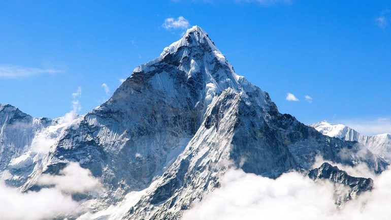
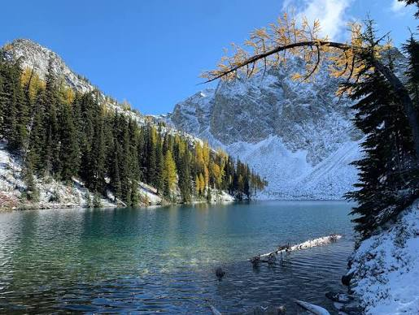
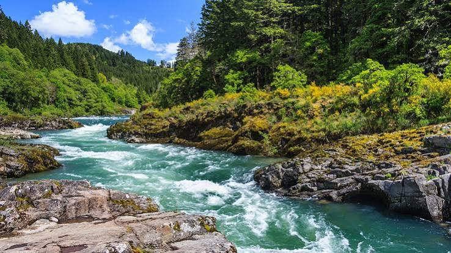
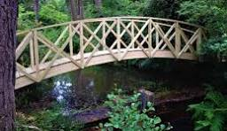
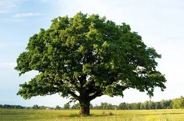

This website showcases a collection of beautiful nature photographs including forests, mountains, rivers, lakes, and flowers. Each image highlights the beauty of the natural world and demonstrates responsive web design techniques.
Resize the browser window to explore the mobile, tablet, and desktop layouts. The page also supports dark mode and reduced-motion preferences to improve accessibility.







